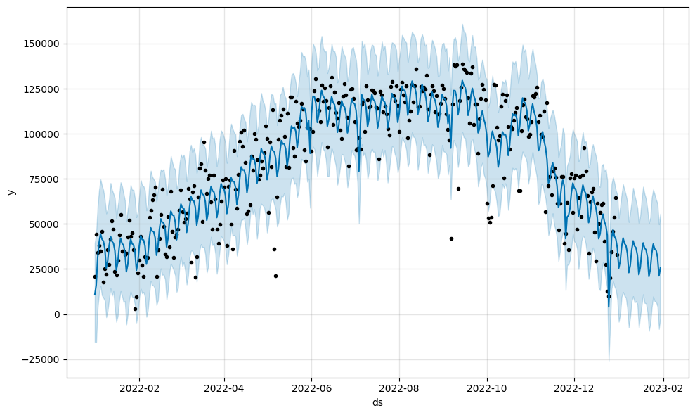

Summary Statistics Plots

Daily Trips Over Year
The Bike Trips Over Time chart also highlights the increased popularity of bike usage during warmer months. We can also see sharp declines when the weather gets colder.
Some notable drops on holidays include:
Valentines Day: Can't be sweaty before your date.
Mother's Day: Can't be sweaty before seeing your mom.
Labor Day: Can't be sweaty before your BBQ.
Christmas: Can't be sweaty before opening presents.
Trips by Day of the Week
People prefer to ride during the week, unless it's a Monday. The most popular day being Wednesday and the least popular being Sunday. Riders see Sunday as a day of rest and also hate Mondays.


Trips by Hour of the Day
After 10 A.M. there is a steady increase until 5 P.M. which is the most popular time to ride followed by 6 P.M. Interestly, 8 A.M is a standout time and among one of the most popular times, this is like due to people who enjoy riding to work or exercising in the morning. Very few people 12 A.M. and however is riding must've had quite the night.
Trip Duration Histogram
The majority of bicycle journeys are relatively brief, as shown in the bike trip duration histogram, with most trips lasting between 1 and 15 minutes. Seldmon do people ride longer, let alone an hour.
Citibike charges $4.49 for a single ride unlock with 30 minutes, however, most riders aren't even close to that. The membership plan is the $205/year or $17.08/month which allows for unlimited 45 minute rides. If you plam on riding for more than 90 minutes a month, you're better off getting a membership.


Medium Ride Duration by Membership Status
Casual rides try to get the most of their $4.49 by riding almost twice as long as those with memberships, or Member's take advantage of their unlimited 45 minute rides.
Trips by Membership Status
Memebers rode over a whopping 24 million times, with casual rides only riding 6 million times. Member's are clearly taking advantage of their unlimited 45 minute rides.
Fun Fact: The average cost of a single ride is $4.49, so if all 30 million rides were single rides, Citibike would have made $134,700,000 in 2022.
With a total of over 30 million rides in 2022, Citibike is clearly a popular mode of transportation in NYC.

Map Graphs
10 Most Popular Routes
Where you start is where you end.
Despite the data accounting for non-rides and reracks, the most popular routes are from the same start and end location. This is likely due to people who rent a bike, ride it, and then return it to the same location.
Fun Fact: The most popular route is from 11th Ave & W 41st St to 11th Ave & W 41st St, which is a 0.0 mile ride.
10 Most Popular Routes Excluding Same Start-End Location
Where you start is where you end, unless you don't.
Riders who dont end up at the same location tend to ride for 3 aventues or 9 city blocks.
Fun Fact: The longest route excluding same start-end location is from Chambers St & Greenway to 10th Ave & W 14 St, which is right along the Hudson River!
100 Most Popular Routes
Still a lot of same start-end locations, but we can see more routes that are not the same start-end location.
Popular Routes Excluding Same Start-End Location
One of the most interesting routes is the one straight through central park. Going all the way from start to end is a 2.5 mile ride, which is a great way to see the park.
Model Prediction Plots


Time Series Prediction Plot using Prophet
Using a time series prediction plot is likely